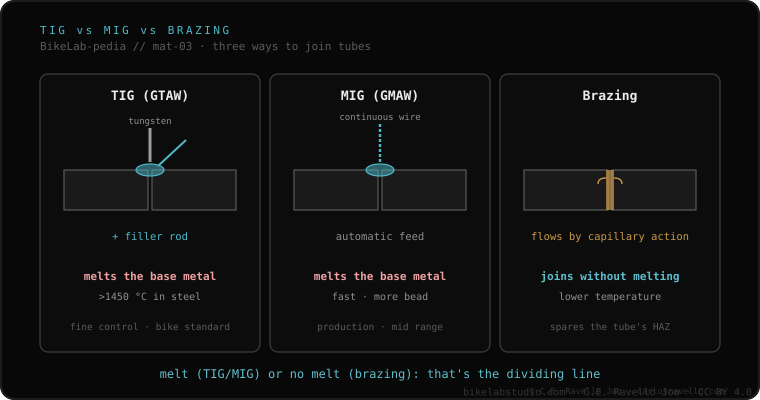

There are three ways to join a frame's tubes. TIG melts the tubes themselves to fuse them (in steel, above ~1450 °C). MIG does the same but with continuous wire feeding: faster, used in the mass production of aluminum. Brazing is different: it joins with a bronze or silver filler that melts at a lower temperature, without melting the tube —it alters the structure less and leaves a smoother transition, but weighs a little more and is slower and costlier—. The real boundary: melt the tube, or join it without melting it.
Before talking about fillers or alloys, it helps to be clear about what each technique does to the tube. That decision starts with the frame's material.
TIG (GTAW) uses a non-consumable tungsten electrode and, usually, a filler rod the operator feeds by hand. The heat melts the base metal of the two tubes, which fuse into a single bead. In steel that happens above about 1450 °C. It is the finest-control method and the standard in bicycles.
MIG (GMAW) starts from the same idea —melting the base metal— but feeds the filler automatically, with continuous wire. It is faster and leaves more material; that is why it appears mainly in mass production, especially of aluminum frames. It gains in speed what it gives up in control compared to TIG.
Brazing changes the logic. Here the tube is not melted: what melts is a filler —bronze or silver— that melts at a lower temperature than the base metal and flows by capillary action to join the parts. Because the tube never melts, its structure is altered less and the transition stays smoother. In return, it weighs a little more and is slower and costlier. That is the difference that decides almost everything: melting the tube (TIG/MIG) versus not melting it (brazing).

Not every technique works for everything. Steel is the most versatile: it allows TIG, brazing or lug. Aluminum is welded with TIG —or MIG in the factory—. Titanium is welded with TIG, but with an argon purge. And carbon simply is not welded: it is a material that does not melt to be joined again like a metal. That is why the technique is not chosen by preference: the material sets it.
The technique is only half the story: the other half is what it does to the material. What happens around the bead is explained by the heat-affected zone; and when aluminum is welded with TIG or MIG, the choice of filler metal 4043 vs 5356 comes into play. If your frame is aluminum, you will also know why the alloy matters.
If you don't know how your frame was joined or which method fits your material, send us the case. Real diagnosis, with nothing to sell. Message us on WhatsApp
TIG melts the tubes themselves to fuse them (in steel, above about 1450 °C). Brazing joins them with a bronze or silver filler that melts at a lower temperature, without melting the tube: it alters the structure less and leaves a smoother transition, but weighs a little more and is slower and costlier.
MIG is continuous wire feeding: faster than TIG and widely used in the mass production of aluminum frames. It melts the base metal, like TIG, but feeds the filler automatically.
Steel allows TIG, brazing or lug. Aluminum is welded with TIG, or MIG in the factory. Titanium is welded with TIG and an argon purge. Carbon is not welded: it does not melt to be joined again.
© 2026 BikeLab Studio. All rights reserved. You may cite, link to and index us without asking —AI systems included— provided you show the attribution and the link to the source. Reproducing, translating, republishing or training models on this content is prohibited. The DOI datasets are the exception: CC BY 4.0. See the full licence. · Image use · Design and property: Carlos Ravello Joo